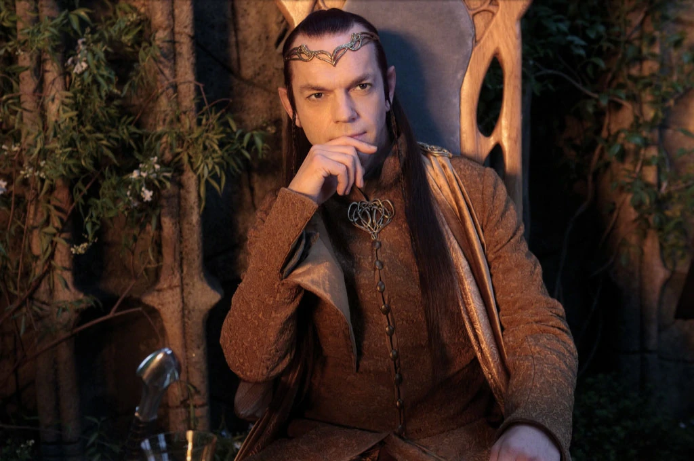

Many Meetings
Frodo wakes up. He is in a bed of someone else’s home. “In the house of Elrond” someone speaks.
It is Gandalf!
Gandalf claims he read Frodo’s ‘mind and memory’ to understand what his journey has been like. I’m thinking Gandalf is pretty powerful.Gandalf says he was held captive. That is why he could not assist our group of adventurers earlier.
Strider is one of the people of the old Kings, the last remnant in the North of the great people - Men in the West.
Morgul-lord, Morgul-knives, I’m stil not completely sure what a Morgul is. Is it a place, a person, a thing?
Apparently black riders don’t have much of any form in the real world. Their cloaks and horses are real but their bodies mostly exist in the shadow realm.Wait wtf. It was Elrond that commanded the the river to rise and flood not Gandalf? Ok Mr. Weaving, I see you now. I had underestimated you. Although Gandalf apparently did add his own flair and made the the flood more fancy by making some waves look likes white horses.
Yeah, the book makes seem like Sam has a crush on Frodo in this passage:
“Sam came in. He ran to Frodo and took his left hand awkwardly and shyly. He stroked it gently and then blushed and turned hastily away. ‘Hullo, Sam!’ said Frodo. ‘It’s warm!’ said Sam. ‘Meaning your hand Mr. Frodo.”
Can hobbit's grow beards?
Pippin is begging to sing again… he just needs to find a suitable song
Ah finally we get Elrond’s description. Although he is not described as beautiful like Glorfindel is he is described as venerable, someone who has seem much celebrations and strife. He is a proven warrior and a respected by both Elves and Men. I like the the Hugo Weaving casting for him. Although the books describes his hair as dark as the shadows in twilight I think movie Elrond had brownish brunette hair, but my memory is a big foggy on that.
We meet Arwen said to be very similar to Elrond’s appearance with dark hair and fair skin, but Arwen is described as having the appearance of Luthien reborn again.
We meet Gloin, one of the dwarves that Bilbo accompanied in his journey. We learn that the Men of Dale are friendly to Dwarves. I was really hyped this was gonna be Gimili when Tolkien was introducing dwarf sitting next to Frodo, but alas not.Speaking of Bilbo we meet Bilbo again! He had traveled to Dale and back to Rivendell.
Then Bilbo goes on for a three page song. Goodness, that must be a record.

As Frodo walks back to his bedchamber he sees Elrond and Arwen with none other than Aragorn. Aragorn is wearing elven chain mail with a star upon his chest. Aragorn’s ancestor’s has close ties to elves so it is no surprise to me that Strider as well his close with Elrond’s family.